Common name in Tamil : Chiru kandal
Common name in Telugu : Gatharu
Common name in Singhalese : Kadol
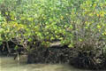
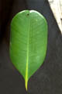
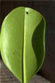
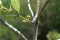
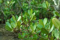
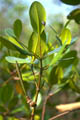
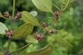
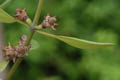
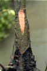
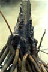
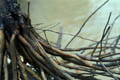
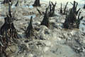
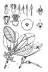
Diagnostic characters
Botany & morphology
Regeneration
Reproductive biology
Ecology
Distribution
Uses
Glabrous shrub, 1 to 2 m tall; flowers peduncled in branched cymes; hypocotyl terete or slightly ridged and warty throughout.
Leaves simple and entire, opposite, elliptic-oblong or obovate, apex emarginate, base cuneate, 4 - 10 x 2 – 6 cm, coriaceous; petioles 1.5 – 2 cm long, stipules interpetiolar, caducous.
Inflorescence stalked axillary condensed cymes.
Flowers small, white, regular, bisexual, 3 – 4 mm long; calyx 5 - 6 lobed, tube adnate to ovary; petals 5 - 6, apex fringed with many ciliae; stamens 10 to 12, inserted between lobes of the disk, filaments slender, anthers oblong; ovary 3-celled, style short, stigma simple.
Fruits 1-celled, 1-seeded; hypocotyle 10 – 12 cm, angular sulcate, warty toward apex, calyx lobes star shaped.
Stem base pyramidal with many stilt-roots.
Bark pale yellowish grey with flakes. Buttresses with flaky bark.
Tree architecture shows Attim’s model.
Dispersal and establishment of seedlings follow the pattern usual for the Rhizophoraceae (vivipary). Seedling development takes about a year. Germination is epigeal.
Pollination by night flying insects, and by moths.
Growing as a semi-understorey species in drier mud near the inland limits of normal tides. It is an associate in mixed mangrove vegetation composed of other inner or even back mangrove species.
East Africa to Australia through Madagascar, India, Bangladesh, Sri Lanka, Burma, Thailand and Malaysia.
Bark decoction is used to arrest hemorrhage; leaves are used to treat skin diseases, leprosy, malaria; roots used as purgative.
Top of the page